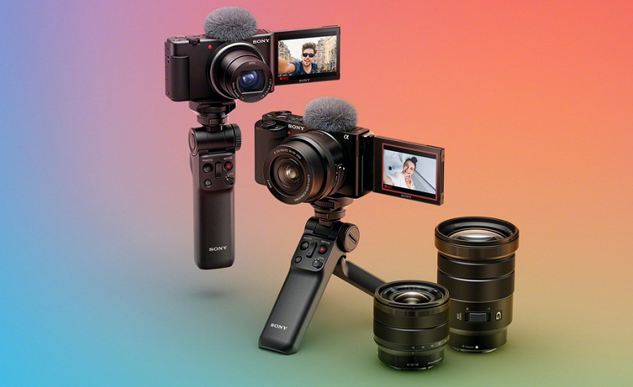

Mahsulotlarni ideal tasvirga olish
: Sony videoblogerlar
uchun optiksai
almashtiriladigan kmaerani taqdim etdi

Sony Electronics kompaniyasi noodatiy kamerani taqdim etdi.Sony Alpha
ZV-E10 modeli videoblogerlar uchun
mo'ljallangan va almashuvchi optikasi orqali
ishlay oladi, deb xabar beradi IXBET.
Sony ZV-E10 yorug'lik
sezuvchanligi ISO 100-32200(ISO 50 dan ISO 51200gacha kengaytirilgan
diapazonda
sozlashni amalga oshirish mumkin) bo'lgan 24,2 megapikselliAPS-C
formatidagi COMOS matritsasi, fokuslovchi
425 nuqta, shuningdek, 3 duyumli suyuq kristal
ekran bilan jihozlangan.
Manba: Daryo.uz